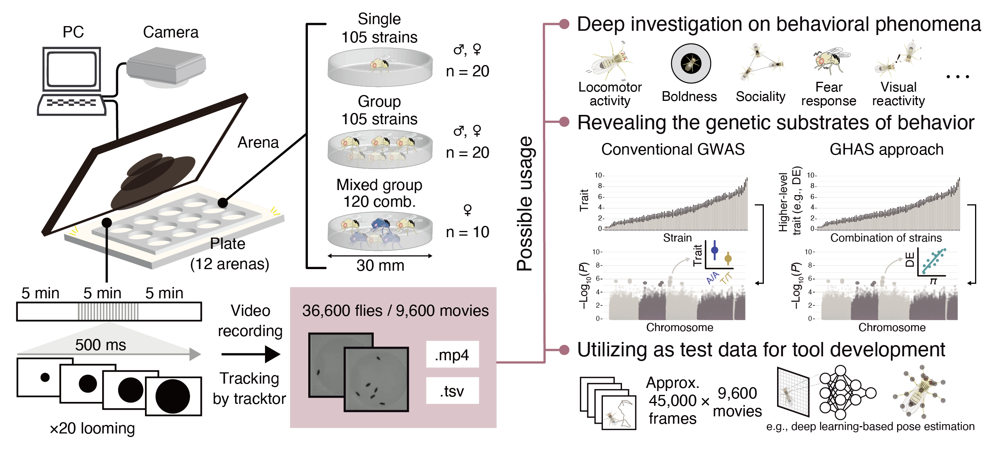

精神疾患を含めた私たちの個性がどのような遺伝基盤で生じているのか, そしてその進化機構の解明は精神医学, 神経科学, そして進化遺伝学における重要な研究課題です. 私は, 比較ゲノミクスや集団遺伝学のアプローチにより, いくつかの精神疾患と関わる小胞モノアミントランスポーター（VMAT1）遺伝子に生じた非同義変異（Thr136Ile）が人類の進化過程で積極的に保持されてきた可能性を示しました（Sato & Kawata, 2018 Evolution Letters）. また, 細胞実験を通した祖先型タンパク質の合成と機能解析により, 人類の進化過程でVMAT1タンパク質に生じたアミノ酸置換がモノアミンの取り込みを低下させる方向に働いたこと, ひいては人類進化の初期において不安が強まる方向に選択圧が働いていた可能性を示しました（Sato et al. 2019, BMC Evolutionary Biology）. さらに同遺伝子改変（Vmat1ヒト型）マウスの作製を通して, Vmat1遺伝子型を介した扁桃体の遺伝子発現および神経活動の変化が不安傾向に影響することを明らかにしました（Sato et al. 2022, iScience）. 現在は大規模コホートデータから, その進化メカニズムに迫ろうとしています.
🔬 Research
🔬 Research
ヒトの精神的多様性の進化遺伝学的基盤の理解

行動多様性が集団に及ぼす影響とその”メタ遺伝基盤”の解明

近年, さまざまな組織において多様性の重要性が叫ばれています. 各々の自由意志と協調は強力な集合知を生み出し, 一人では達成し得ないパフォーマンスを生み出すことが知られています. 私は, このような創発現象のメカニズムをショウジョウバエを題材に検証しています. 大規模な集団行動実験とゲノム解析を組み合わせ, 個体間の行動多様性が非相加的に集団のパフォーマンスに影響すること（Okuyama, Sato, and Takahashi, bioRxiv）, そして恐怖反応の集団内多様性が同調現象と合わさることで捕食回避に働くメカニズムを示しました（Sato & Takahashi, bioRxiv）. またこの研究を通して, 新たなゲノム解析アプローチ（Genome-wide higher-level association study: GHAS）を提唱し, 個体間相互作用が生み出す非相加的なパフォーマンスの向上に寄与する遺伝的変異の検出手法を示しました.
大規模行動データセットの整備とメタ解析による知見の創出

オープンサイエンス推進の観点から, 研究過程で生まれたデータを2次利用しやすい形で共有したいと考えています. 一例として, 上記のショウジョウバエの研究を通して取得した3万個体以上、約1万に及ぶ動画およびトラッキングデータを公開しました（Sato et al. Scientific Data）. それぞれ遺伝的に異なる100系統以上, 雌雄や社会条件別に収集したこのデータは動物の行動データとしては類を見ない規模であり、行動遺伝学の様々な観点から活用可能であると考えています. また, 150系統以上に及ぶ精神疾患モデルマウスの大規模行動データベースの整備にも携わり, そのメタ解析から新たな行動指標を開発しています（Sato et al. in prep.）.
動物の家畜化に関わる懐きやすさの遺伝基盤の解明
植物の栽培化や動物の家畜化は人為選択といわれ, 人類による最初の進化実験と呼ぶことができます. 動物の家畜化においては, 毛色や骨格といった形態的側面, 繁殖期間などの生理的側面, そして人への懐きやすさなどの行動的側面において, 生物種間で共通する大きな変化（“家畜化症候群”）が生じており, その遺伝的基盤の解明は進化生物学の大きな課題の一つです. 私は, 『種の起源』にもその懐きやすさが記載されるウサギに着目し, 野生種との脳内トランスクリプトームの比較から, その家畜化過程で生じた脳内遺伝子発現の変化を明らかにしました（Sato et al. 2020, Genome Biology and Evolution）. 特に情動の制御に関わる扁桃体ではドーパミンの機能に関連する遺伝子群の発現が家畜ウサギで増加しており, 人への懐きやすさといった行動と関連している可能性があります.
人新世における生物の急速な環境適応の理解
人類はその誕生以降, 高い知能とともに周囲の環境を改変し, 地球全域にまで生息地を広げました. その過程では, 他の生物の生息域や個体数の減少（場合によっては絶滅）だけでなく, 新たな環境への生物の適応まで引き起こしています. 私は, 人間活動に伴って生息域を広げ, 世界各地で在来生態系に大きな影響を与えているアメリカザリガニに着目し, 本種のゲノムで生じた顕著な遺伝子重複がその幅広い生息環境に寄与している可能性を明らかにしました（Sato et al. iScience）. また, 都市夜間光（Artificial light at night: ALAN）が沿岸生物に与える影響に着目し, ALANがフナムシの行動や形態, 生息域に与える影響を検証しています（Sato, submitted）. フィールド調査や行動実験, ゲノムやトランスクリプトーム解析を通して, 人間活動が生物の急速な進化に与えた影響の包括的な理解を目指しています.
© 2017– Daiki Sato